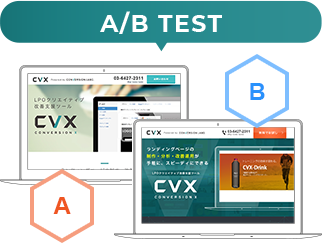
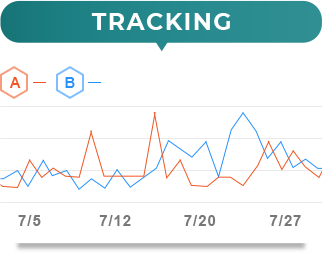

LPの制作・分析・改善運用が
手軽に、スピーディーに
内製化できる。
インハウスLP制作/LPO支援ツール
IT 導入補助金 登録ITツール
USER VOICE
-
とにかく操作が
直感的で理解しやすい！株式会社ビジネス・ブレークスルー様
-
A/Bテストができて
LPも簡単に作れる！マネックス・アセットマネジメント
株式会社様 -
立ち上げのスピード感で
選んだのがCVX株式会社シェリロゼ様
ランディングページの新規作成もCVXで可能。
約200種類の
デザインテンプレートを標準搭載
「穴埋めに近い感覚」で驚くほど簡単にランディングページ作成が内製化できる。

PC・スマホ・レスポンシブにも対応
写真もそのまま自由に使えて、バリエーション豊富な
LPデザインテンプレートを多数ご用意。
様々な業種/業界を研究しながら
テンプレートを常に増やし続けています。
だから、CVXを活用すれば、ゼロから作る手間は不要。
テンプレートをもとに、あなたの目的を叶えるランディング
ページを作成し、すぐに運用を開始できます。
記事型LPテンプレートも搭載
SNS広告やインフィード広告と相性の良い読み物形式のLPテ
ンプレートもご利用いただけます。複数のデザインテイスト
でテンプレートをご用意しているので、記事のジャンルに合
わせて最適なテイストのページを作成可能。
CVXなら、細かな文言修正や写真差し替えに素早く対応でき
るので、記事の量産や同時運用にも適しています。
デザインテンプレートの活用で制作工数を圧縮。
スピーディなランディングページの立ち上げを可能にします。
フルオーダーの
LP制作工程
構成
ライティング
デザイン
コーディング
…
CVXの
テンプレートなら
編集作業のみ
工数大幅 CUT
CVX は様々な LP 制作/運用ニーズにお応えする
ノーコード LP制作/LPO支援ツールです。
-
CASE01
一度に大量の LP を
短期間でローンチしたい。（例）多店舗 / 多拠点展開をお考えの企業様
-
CASE02
新規事業・新商品の
テストマーケティングをしたい。（例）新商品・新サービスのマーケティングを
お考えの企業様 -
CASE03
自社のクライアント様の LP 制作/
LPO を効率的に支援したい（例）広告代理店様 / 制作会社様
コンサルティング会社様 -
CASE04
外注せず、インハウスで
LP 制作・運用を内製化したい。（例）自社内の人材活用をお考えの企業様
リモートワークで利用を検討の企業様 -
CASE05
自社およびクライアント向けに
採用 LP を作成し、応募率を改善したい。（例）新卒採用 / 中途採用を実施している企業様
求人広告代理店様、採用コンサルティング会社様 -
CASE06
現在運用している LPを移行して、
効率的に改善できる体制にしたい。（例）既存 LP の成果改善を内製化したい企業様
※現在、運用中のランディングページを CVX に組み込んで、ご活用いただくことも可能です。(有償)
導入事例
-
株式会社ビジネス・ブレークスルー様
業態：経営指導・人材育成教育
従業員規模：100～200名


-
マネックス・アセットマネジメント株式会社様
業態：資産運用サービスの開発・運用
従業員規模：10〜100名


-
株式会社シェリロゼ様
業態：企業の社員研修および個人向け
自分磨き講座従業員規模：10〜100名


制作から公開後の運用まで「ALL IN ONE」の機能が充実。
ページ制作、A/Bテスト、ページ分析、クリエイティブ改善まで
CVR 最適化に必要な LPO 機能を備えています。
- 
- 
ページの新規制作からA/Bテスト、専用エディタによるページの改修・改善まで行えます。
さらに普段お使いのGoogleアナリティクスからタグマネージャーの設定まで、
自在にカスタマイズできる柔軟性を併せ持ったクラウド型のLPOツールです。
ランディングページに特化した
クリエイティブ改善支援ツール
CVX はランディングページの制作・運用改善を
専門領域とするコンバージョンラボが
｢シンプル、スピーディ、フレキシブル｣をコンセプトに
現場目線で開発したクラウド型 LPO ツールです。
コンバージョンラボ書籍出版実績
「ランディングページ制作・改善をテーマにした専門書」も執筆。
好評
発売中
-
ランディングページ
成果を上げる100のメソッド出版社 : エムディエヌコーポレーション
-
ランディングページ・
デザインメソッド出版社 : エムディエヌコーポレーション
CVXのA/Bテスト機能を使えば
煩わしいHTMLの直編集やタグ設置を
都度行う必要がありません。
ストレスフリーにテストを繰り返すことができます。
仮説を考え、CVXですぐにデザインパターンを作成。
A/Bテストがわずか数秒で立ち上がるため、
計測結果を見ながら「検証と改善」が高速PDCAでまわせます。
クリエイティブパターンを複数用意し、
同時にテスト運用することも可能です。
AB テストも簡単 2STEP !
充実したページ編集機能
変更したい「テキスト」も「画像」も、
カーソルをあわせて、操作するだけ。
テキストの即時書き換え
キャッチコピーや文言の変更も簡単に。
PC、スマートフォン同様のインターフェイスで確認。
シンプルかつシームレスにコンテンツの改善・編集が
できます。
面倒な更新や修正も、他人に頼らず自分でサクサク反映
できるので時間も手間もかかりません。
テキストの行間、
字間の微調整
フォトサイズやカラーの調整はもちろん、
行間・字間の調整まで編集画面で簡単に行えます。
また、リンク設定機能も搭載されているため、
テキストリンクの作成が容易に行えます。
指定のメニューバーから様々な変更機能を直感選択。
思い通りのカスタマイズが行えます。
画像の即時差し替え /
リサイズ / トリミング
キービジュアルの画像をいくつかのクリエイティブで
テストしたい時も、簡単に差し替えが可能です。画像の
リサイズ/切り抜き機能も標準搭載しているため、
専用の画像編集ソフトがなくても安心です。
すべての画像要素を CVX 上で変更できるため、
テンプレートデザインをもとに、全く異なるページを
作成することも簡単にできます。
画像サイズの微調整
｢ボタンのサイズを一回り大きくしたい｣
こまかい調整作業を行いたい時にも、簡単に要素単体の
大きさを調整することができます。
気になる箇所があれば、すぐに自分で修正できるため、
誰かに依頼をするコミュニケーションコストを
大幅に削減することができます。
要素の移動 / 複製 / 削除
ページ内のあらゆるテキストや画像を、
ドラッグ & ドロップで好きな所に移動できます。
要素を複製して並べたり、不要な要素を
削除することもクリックひとつで簡単に。
普段お使いの資料作成ツールのように、
直感的な操作で自由自在に誰でも簡単に
ページのレイアウトを作り込むことができます。
状況に応じてLP内のコンテンツを
上下入れ替え・非表示・追加が手軽に編集できる。
上下入れ替え
最初に見せたい大事なコンテンツを上部に、
熟読させたい読み物を下部に配置するなどの
工夫をお客様自身で直接反映できます。
計測状況や目的に合わせたカスタマイズを
重ねて行くことで、より魅力が伝わるページへと
育てることが可能です。
コンテンツの非表示・追加
必要のないコンテンツを削除することも可能。
よりコンパクトでシンプルに、必要な情報だけを
提供し、ユーザーを惑わせない導線を設計する
ことで効果的にアプローチできます。
また、強調して伝えたいセクションを
同じランディングページ上から追加し、
編集もできるため、計算できないくらいの
クリエイティブパターンを試せます。
共通パーツの追加
「テンプレートに丁度いいレイアウトが無い」
そんな時は共通パーツを活用しましょう。
『セクション追加ボタン』から、『共通パーツ』を選択すると、様々なレイアウトパターンから自由にコンテンツを
追加することができます。
その名の通り、どのデザインテンプレートに対しても
共通で追加できるパーツなので、この機能を使いこなせ
ば、気に入ったテンプレートをベースに、より柔軟にカ
スタマイズすることが可能になります。
プログラミング不要
エントリーフォームも手軽に構築できる。
改善もできる。
エントリーフォームはランディングページに
必要不可欠な要素です。
管理画面から、必要な項目を選ぶだけでフォームが構築で
きるので難しい知識は一切不要。
記入漏れを防ぐ必須項目の指定もボタン一つで設定でき、
項目の順番も簡単に入れ替えが可能です。
プログラミング不要で、あらゆる状況を想定した
フォームの入力条件に CVX は対応しています。
もちろん既存フォームを活用することもできます。
状況にあわせて3つのフォームタイプを選択できる
-
フォーム一体型
ランディングページと
フォームが一体になったタイプ。 -
フォーム遷移型
ランディングページから
フォームにページ遷移するタイプ。 -
既存フォーム遷移型

既存のフォームや外部フォームを
活用するタイプ。
HTMLを直接編集することも可能
より詳細にページを作り込める。
改善アイディアを素早くページへ反映。
シンプル操作で、テキストや画像を自由に即時差し替え。
デザイン・コーディングの手間を大幅に削減。
CVX を使えば、改善施策を「考える時間」にまわせます。
-

ベーステンプレートを選ぶ
ランディングページにおける必要な要素や構成を極限まで考え、デザインへと
落とし込んだベーステンプレート。
PC・スマートフォンのデバイス別から、配色・構成・レイアウトまで、
目的にあわせて自由に選べます。 -

テンプレートを編集する
ベーステンプレートを選んだら、編集画面へ。必要な箇所にカーソルをあわせて、
テキスト・画像を差し替えるだけ。
違うレイアウトにしたい場合もボタンひとつで、用意された
レイアウトパターンへ切り替わります。 -

フォームを作成する
フォーム作成もバックエンドの知識がなくても必要項目や条件を
管理画面で選ぶだけ。
ランディングページ専用のフォームが完成します。
※外部のフォームや既存フォームを今まで通り活用することも可能です。
デザイン・コーディングの知識がなくても
インハウスで改善運用が手軽に、すばやくできる。
-
シンプル操作
シンプルな操作で、必要なテキスト、画
像、レイアウトパターンを自由に差し
替え。コーディング作業が不要です。 -
柔軟性
CVX に標準搭載した共用テンプレートも
自前で用意したランディングページも改善
対象として利用できます。 -
スピード作成
シームレスな改善を可能にします。
「こんなツールがあったらいいな」を形にし
た現場目線の LPO ツールです。
ランディングページの分析・仮説・検証を過去最速に
-

外部に全てを頼らずインハウスで改善体制をつくりたい。
-
思いついた改善施策を素早くページへ即時反映したい。
-
A/Bテストをテンポよく回して勝ちパターンを見出したい。
御社のマーケティング戦略にあわせた LPO が実現
CVXなら最短即日で利用開始することもできます。
他にもこんな特徴があります。
- ドメインも自由に設定
- 目的にあわせて、ドメインも自由に設定。
新規ドメインおよびサブドメイン OK。SSL にも対応。
DNS の初期設定サポート/代行も行っています。
- Google アナリティクスや
タグマネージャー設定もOK - Google アナリティクスの設定に加え、
>GTM/YTMタグも利用できるため、計測機能も豊富。
他ツールと併用できる柔軟性をもたせています。
- オリジナルテンプレート開発や
デザインも必要に応じてご支援 - オリジナルテンプレートの開発や既存テンプレートの
カスタマイズまで必要に応じて、LPO の専任スタッフが
サポートいたします。
よくあるご質問
-
-
無料で試すことはできますか？
-
可能です。機能制限がありますが、
専用フォームからお問い合わせください。一部の機能を除き、CVX の無料お試しを期間限定でご利用
いただけます。無料版でお使いいただける機能は、PC/SPデ
ザインテンプレートの選択から、ページ編集機能全般、フォ
ーム編集機能など、本当に使いやすいかどうかをお客様に
ご判断いただくことを目的に行っています。詳細はお問い
合わせください。
-
-
-
他ツールとの併用/連携はできますか？
-
併用/連携可否について事前検証でサポートします。まずは一度、ご相談ください。
CVX は Google/yahoo タグマネージャーを設定できるため
、タグマネージャー経由で、連携したいツールを実装頂き、
他のツールが使えるどうか、お申し込み前の段階で検証支
援も行っています。どういうツールを併用されたいか含め
て、まずは一度ご相談ください。
-
-
-
管理画面の操作は難しくないですか？
-
PCで資料作成のご経験があれば、
ほぼ問題なくお使いいただけます。デザインやコーディングの専門知識がなくても、私たちが
CVX 上に用意した共用のデザインテンプレートを用いて、
ランディングページの制作や改善、A/B テストまで、ワンス
トップで行えます。管理画面もわかりやすく、シンプルかつ
直感的な UI にしています。また、操作がわからない場合も、
CVX カスタマーサポートが使い方や疑問・質問にも対応し
ていますのでご安心ください。
-
-
-
デザイン制作や分析・検証などの
サポートはしてもらえますか？ -
可能です。ディレクターやデザイナーが
目的や課題に応じてサポートします。必要に応じて、オリジナルでランディングページデザイン
を制作し、お客様専用のデザインテンプレートとして、CVX
上で運用することも可能です。また、共用のデザインテンプ
レートの一部をカスタマイズしたり、お客様でお持ちの LP
を CVX に組み込むことも、弊社のサポートで全て対応でき
ます。なお、公開後のページ改善や分析手法においても、
LPO の知見をもとにサポートを行っています。
-
導入実績
大手企業からスタートアップまで幅広く導入いただいています
CVXをご利用いただいたお客様の声
『Googleアナリティクス連携で、分析もしやすい』
ランディングページの編集・作成が簡単にできるので、とても満足しています。あとはGoogleアナリティクスと連携しているのでシームレスに分析できるのが良いです。ABテストも手間いらずで簡単ですね。
『柔軟性の高いツールだと思います』
素晴らしいテンプレート、機能が充実しており驚くばかりです。CVXで使える標準テンプレートだけでなく、オリジナルで制作したLPまで活用できるので、柔軟性の高いツールだと思います。
『かゆいところまで行き届いた使いやすさ』
LPOの現場に携わっている人たちが試行錯誤ながら開発したツールだとよくわかります。相当苦労されて開発されたんだと思います。操作も強烈に直感的ですし、文句無しの出来です。
『早速リスティング広告経由でCVが出て、順調と言える状況です』
操作感が非常に良く、テンプレートを使えばコーディング知識がない私でも成果が出るLPを作れました。色々とご協力もありがとうございました。
『手厚いサポートに感謝しております。』
弊社内の人的リソースが少ない中で、CVXはこれだけ簡単にLPが作れて、本当に感謝しております。些細な相談にも都度快くご対応いただき、いつも助かっております。
『スピード重視でリリースが間に合った。』
事前に無料トライアルを実施させていただき、実用的に使えるイメージができました。おかげさまで無事に新規事業サービスリリースができ、LPの成果も初速好調に推移しております。